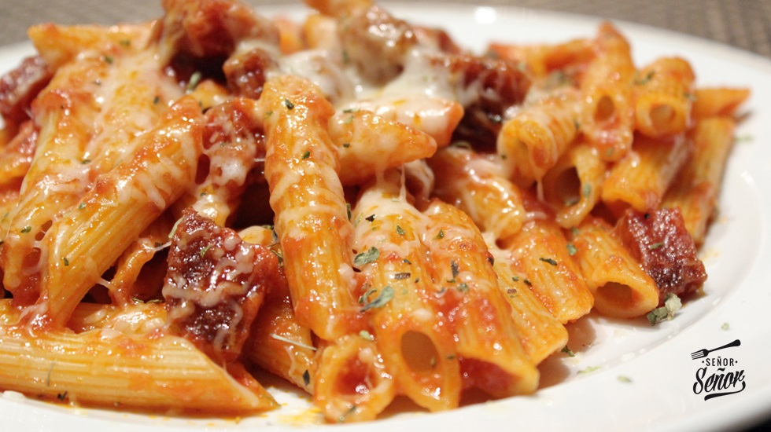

Macarrones gratinados con chorizo
"Son innumerables las recetas que se pueden elaborar con pasta, siendo los macarrones con chorizo una genialidad de tradición española. Lo mejor de Italia y un embutido 100% español se combinan para deleitarnos en cada bocado."

Ingredientes:
- Macarrones
- Queso
- Chorizo
- aceite de freir
- oregano
- cebolla
- tomate frito
- 3 ajos
Preparación:
- Poner agua a hervir en una olla
- Cortar la cebolla en brunoise
- Laminar los ajos
- En una cazuela sofreír la cebolla y los ajos en 3 cucharadas de AOVE
- Cortar el chorizo en tacos e incorporarlo a la cazuela cuando la cebolla esté trasparente
- Dorar el chorizo
- Incorporar la salsa de tomate casera y remover
- Cocinar a fuego suave mientras se hierve la pasta
- Introducir los macarrones en agua hirviendo con sal
- Cocinar durante 8-10 minutos
- Cuando la pasta esté al dente, pasar los macarrones de la olla a la cazuela
- Apagar el fuego y remover para que se mezclen bien todos los ingredientes
- Gratinar al horno con queso parmesano rallado
- O servir con queso parmesano rallado
Información nutricional:
- grasa 14,96g 21%
- grasa saturada 4,151g 21%
- Grasa Monoinsaturada 5,145g
- Grasa Poliinsaturada 0,924g
- Carbohidratos 53,50g 21%
- Azúcar 9,59g 11%
- Proteína 13,80g 28%
- Sal 0,74g 12%